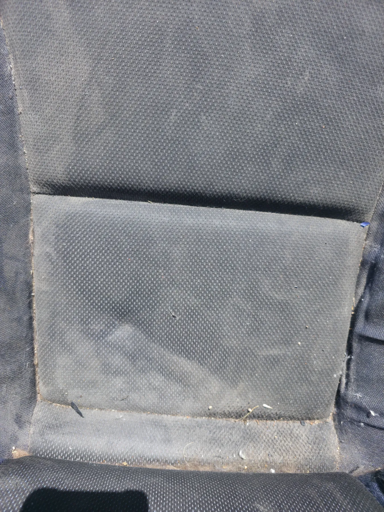
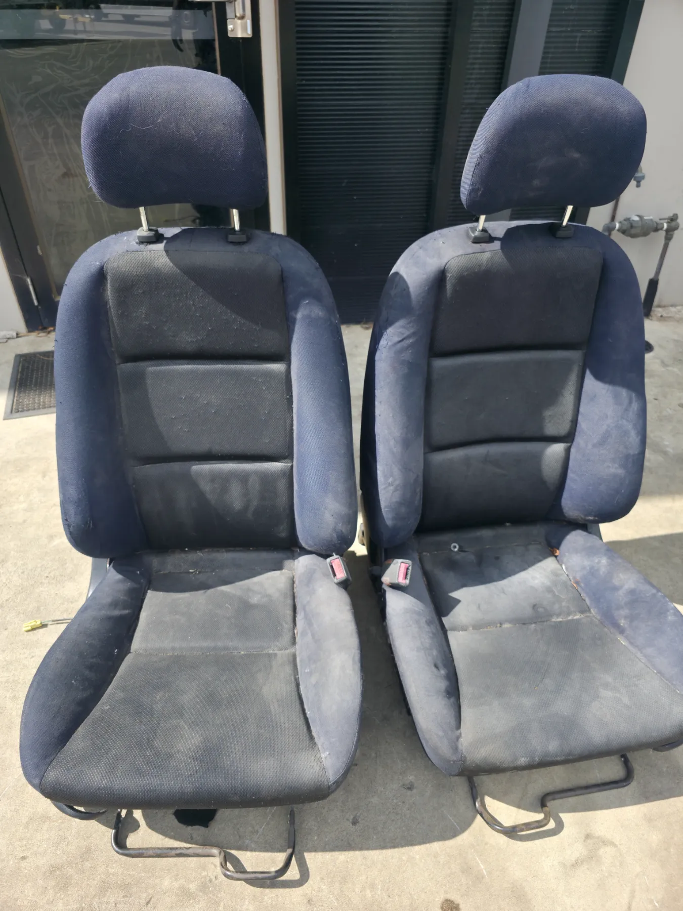
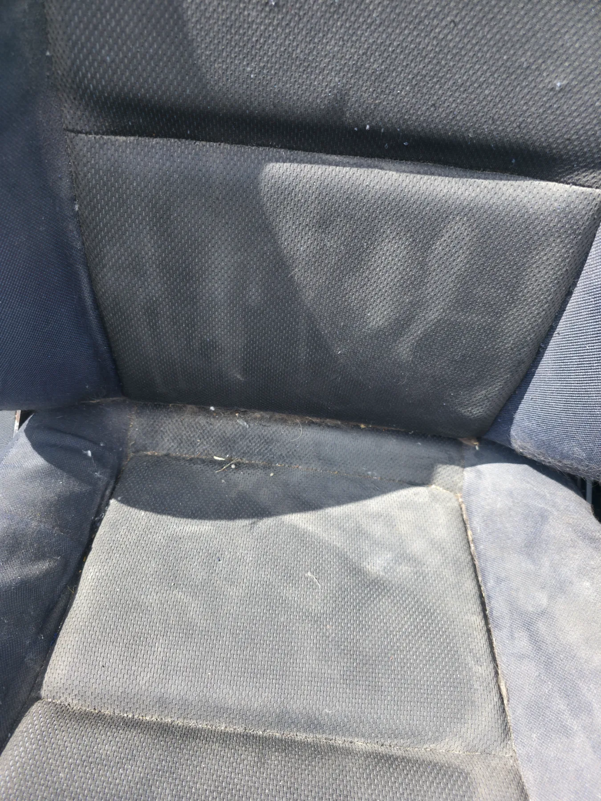
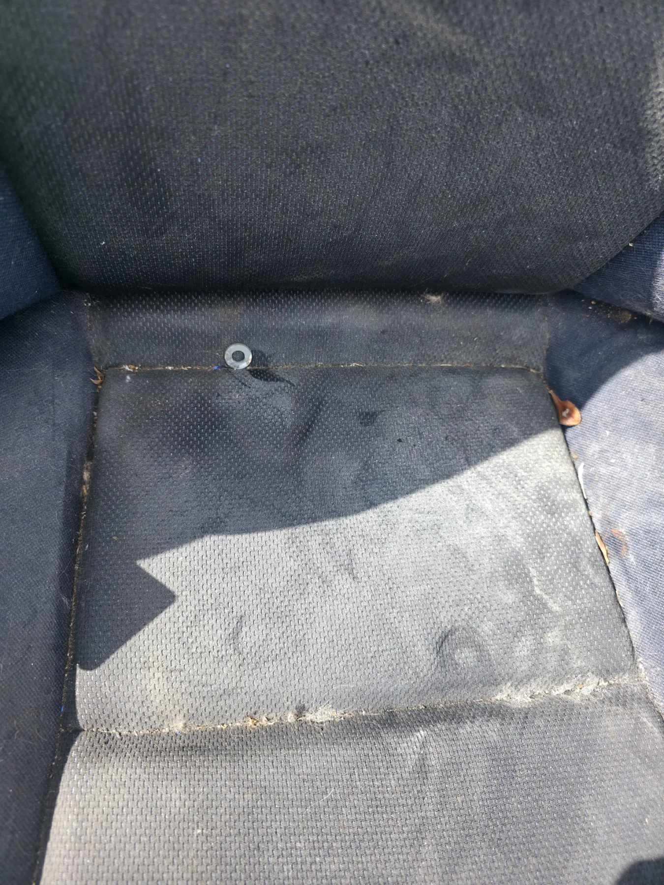

Before Detailing
Before Photos
The vehicle condition before our service

Before · 1
Before · 2
Before · 3
Before · 4 Before · 5
Before · 5
 Before · 6
Before · 6
 Before · 7
Before · 7
 Before · 8
Before · 8
 Before · 9
Before · 9
 Before · 10
Before · 10